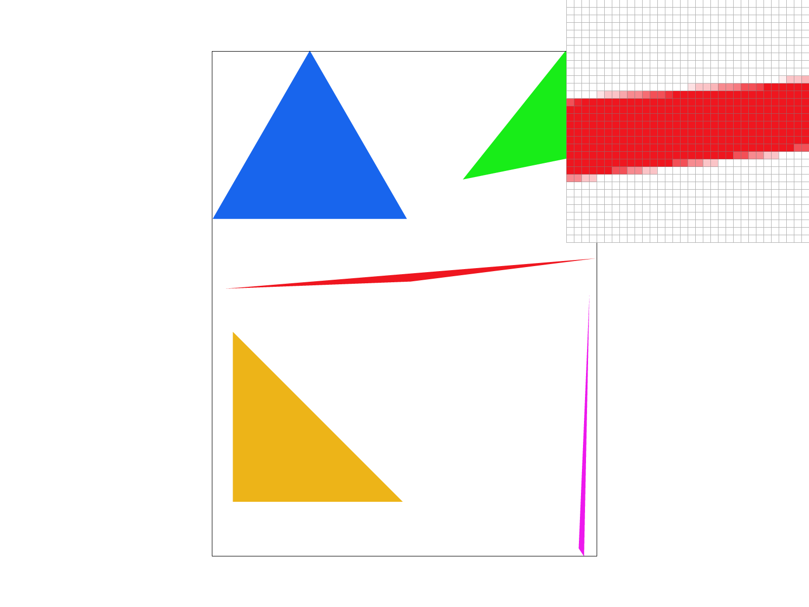
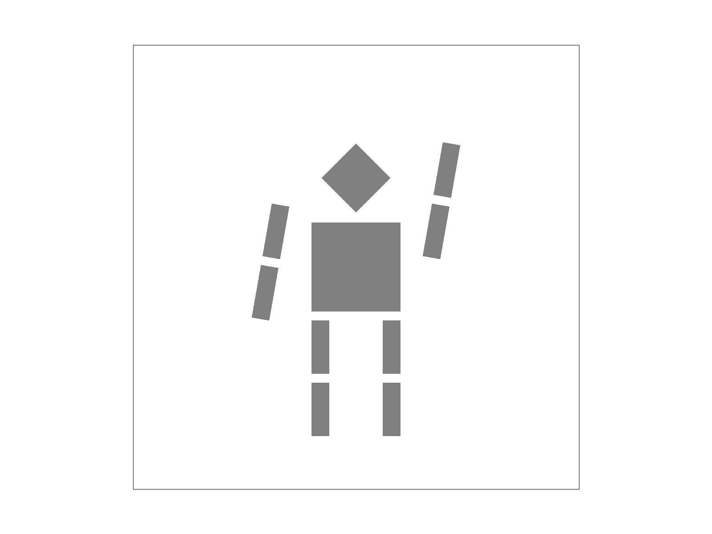
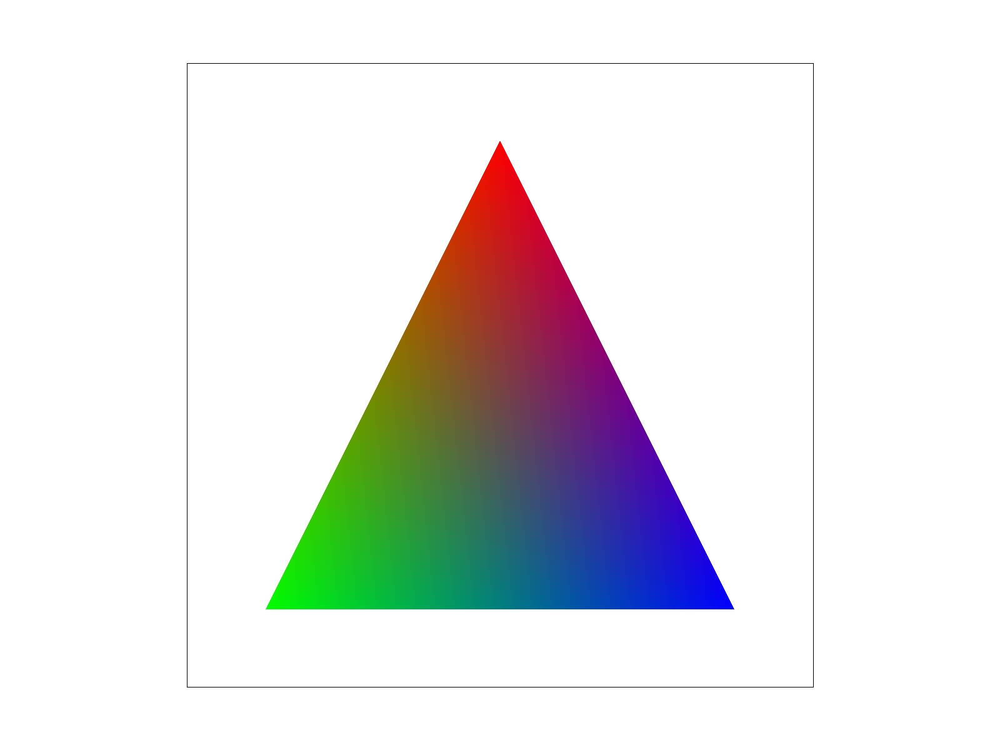
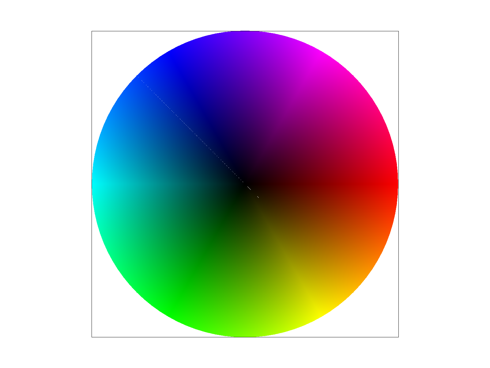
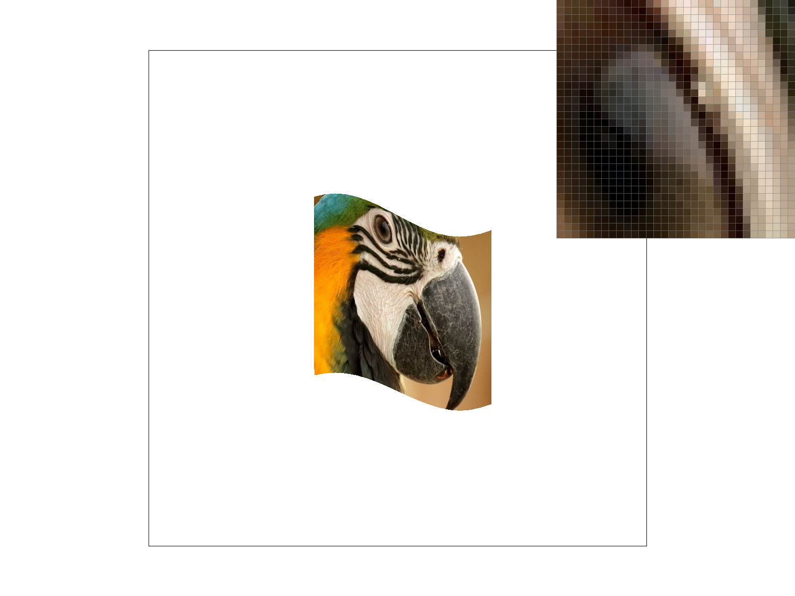
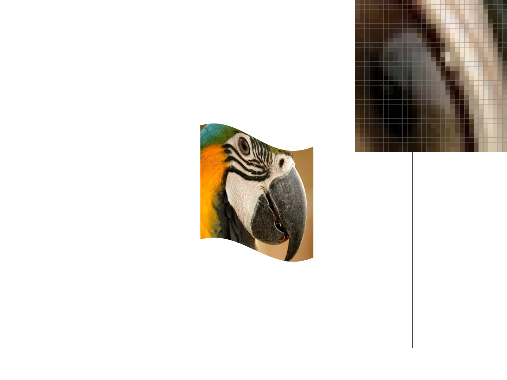
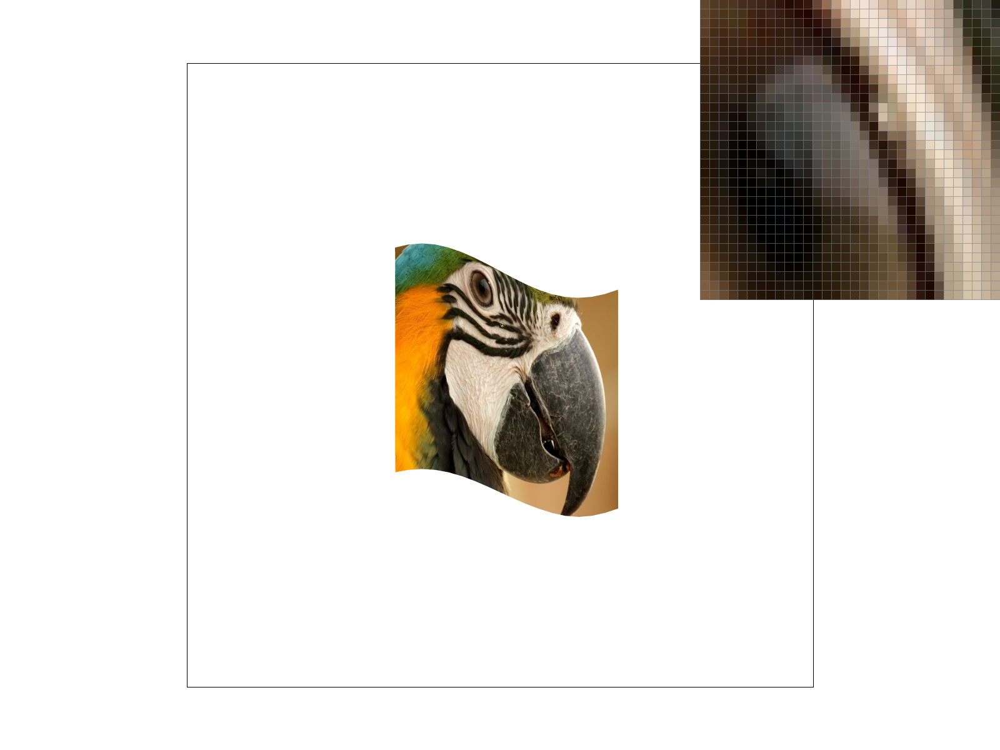
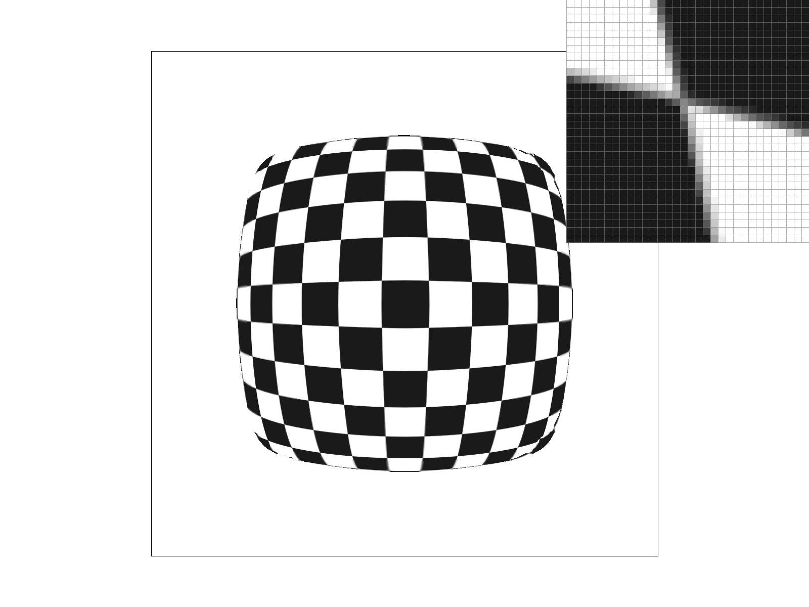

Overview
In this assignment, we built a 2D rasterizer from scratch. Starting from triangle rasterization with a bounding box and edge function test, we worked up through supersampling for antialiasing, transform matrices for positioning objects, barycentric coordinates for color interpolation, and finally texture mapping with pixel and level sampling.
The most interesting thing we learned was how each technique addresses aliasing at a different level. Supersampling attacks it at the geometry level, pixel sampling at the texel level, and level sampling at the resolution level. Seeing how they interact and complement each other made it clear why real renderers combine all three to produce images with minimal aliasing artifacts.
Task 1: Rasterizing Single-Color Triangles
To rasterize a triangle, we first compute a bounding box around it. We take the floor of each
vertex's minimum x and y and the ceiling of the maximums, then clamp those to the screen
edges. Then for each pixel inside that box, we test whether its center point at
(x + 0.5, y + 0.5) is inside the triangle.
For each edge of the triangle, we run an edge function that computes a cross product. We determine winding order by computing the triangle's signed area, then check that all three edge values match that sign. Zero values on a boundary pass either check, so edge pixels are always filled. Zero-area triangles are skipped entirely.
Our algorithm is no worse than one that checks every sample within the bounding box because it checks exactly those samples and no others. That box is just the smallest rectangle that fits around the triangle, found by flooring the minimum and ceiling the maximum x and y values across the three vertices. So, in the worst case we're doing exactly the same work as a standard bounding box traversal.
The pixel inspector here is centered on the tip of the red triangle in
test4.svg, where the aliasing effect is most visible along two of its edges.
Task 2: Antialiasing by Supersampling
We used a grid-based supersampling algorithm and a flat array data structure. Specifically, we
used a std::vector<Color> called sample_buffer sized at
width × height × sample_rate to store all subsamples as floating
point colors before anything gets written to the framebuffer. Within each pixel, the
subsamples are arranged in a spp_side × spp_side grid where
spp_side = sqrt(sample_rate), and each subsample's position within the pixel is
(x + (i + 0.5) / spp_side, y + (j + 0.5) / spp_side).
Supersampling is useful because it reduces aliasing—the jagged artifacts we observed in Task 1 when sampling only once per pixel. A single sample only tells us whether the pixel center is inside or outside the triangle, which gives a hard on/off result. By taking multiple samples per pixel and averaging them, we reduce aliasing and produce smoother edges because partial triangle coverage contributes proportionally to the final pixel color. In practice this means pixels near triangle edges get blended colors rather than hard on/off values, which is what produces the antialiasing effect shown below.
We modified several components of the pipeline to support supersampling.
set_sample_rate and set_framebuffer_target were updated to resize
the sample buffer to width × height × sample_rate whenever the
sample rate or window dimensions change. fill_pixel was updated to write the
same color to all subsamples for a given pixel, so points and lines continue to render
correctly without being supersampled. rasterize_triangle now writes directly
into the sample buffer instead of the framebuffer. Finally,
resolve_to_framebuffer was updated to average all subsamples for each pixel down
to a single color, clamp the result to [0, 1], and convert to 8-bit unsigned integers
for display.

At sample rate 1, the triangle tips show obvious staircase aliasing since each pixel is either fully inside or outside the triangle. At rate 4 the edges soften noticeably, and at rate 16 they are much smoother. Higher sample rates produce a more accurate estimate of partial triangle coverage per pixel, which is most visible at thin corners where coverage changes rapidly.
Task 3: Transforms
The three 2D transforms are implemented as 3×3 matrices in homogeneous coordinates. For translation, an identity matrix is used as the base and the x and y offsets are placed in the last column. For scaling, the two scale factors are placed on the diagonal with the rest of the matrix set to match identity. For rotation, the input angle is first converted from degrees to radians, then the cosine and sine are computed and arranged into the standard counter-clockwise 2D rotation matrix, with the negative sine in the upper right of the 2×2 block and positive sine in the lower left.
For the robot, we wanted to make Cubeman look like he's waving with his left arm raised up
toward his head, while his right arm rests down by his side. We achieved this by adding a
rotate(-70) transform to the left arm group and right arm group, rotating them
around their attachment points. Next, we scaled the head up from
(0.5, 0.5) to (0.55, 0.55) to improve its proportion relative to
the torso. Finally, we changed every polygon's fill from #EF161F to
#808080 to give Cubeman a sleek metallic look.

Task 4: Barycentric Coordinates
Barycentric coordinates express any point inside a triangle as a weighted sum of its three vertices, where the weights (α, β, γ) are non-negative and sum to 1. The figure below shows this concretely: the top vertex is pure red (α=1, β=0, γ=0), the bottom-left is pure green, and the bottom-right is pure blue. A point halfway between the red and green vertices gets α=0.5, β=0.5, γ=0, producing yellow. The center of the triangle has α=β=γ=1/3, giving equal contributions from all three vertices and producing the brown seen in the middle.


Task 5: "Pixel Sampling" for Texture Mapping
Pixel sampling is the process of determining what color to assign to a screen pixel by looking up a value from a texture image. Since texture coordinates are continuous but the texture itself is a discrete grid of texels, we need a way to map a floating point UV coordinate to an actual color.
In rasterize_textured_triangle, we compute barycentric coordinates for each
sample point and use them to interpolate the UV coordinates across the triangle surface. That
interpolated UV is then passed to either sample_nearest or
sample_bilinear depending on the current psm setting.
Nearest neighbor sampling snaps the UV coordinate to the closest texel by rounding, returning that single texel's color. It's fast but can look blocky when the texture is magnified since there's no blending between texels.
Bilinear sampling instead takes the four texels surrounding the UV coordinate and blends between them using linear interpolation in both x and y. This produces smoother results at the cost of a few extra texture lookups.
The difference between nearest and bilinear is most pronounced in three situations: when the texture is magnified and a single texel maps to many screen pixels, along sharp color boundaries where hard texel snapping creates visible blocks, and along diagonal edges where nearest produces staircase artifacts. Bilinear mitigates all three by interpolating across the four nearest texels.



At sample rate 1, nearest sampling appears more jagged around the eye than bilinear because nearest simply snaps to the closest texel with no blending. Bilinear interpolates across the four surrounding texels, which softens those transitions. At sample rate 16, the two look more similar since supersampling already smooths out much of the aliasing, though bilinear still produces slightly more uniform color transitions around the eye glaze.
Task 6: "Level Sampling" with Mipmaps for Texture Mapping
Level sampling is about choosing which mip level to read from based on how compressed the texture appears on screen. When a surface is far away or angled, many texels collapse into a single pixel and reading from the full resolution texture produces aliasing. Mipmaps solve this by precomputing half-resolution copies of the texture, and level sampling picks the right one.
Here is how we implemented this: in rasterize_textured_triangle, we compute
barycentric UV coordinates for the current sample point and two neighbors offset by one pixel
in x and y, passing them to Texture::get_level. The differences between these
tell us how fast UV is changing across the screen. After scaling by the texture dimensions to
get the rate of change in texel space, we take log2 of the larger magnitude. A
bigger footprint means more texels per pixel, so we step down to a coarser mip level.
In Texture::sample, L_ZERO always reads from level 0 regardless of
the computed level. L_NEAREST rounds the level to the nearest integer and samples
there. L_LINEAR samples from the two bracketing integer levels and blends between
them weighted by the fractional part—this becomes trilinear filtering when paired with
bilinear pixel sampling.
Tradeoffs Between Sampling Techniques
Pixel sampling: The simplest approach and requires no extra memory. Nearest is faster but can look blocky, while bilinear smooths things out by blending between nearby texels. Neither one accounts for how zoomed in or out the texture is though.
Level sampling: Requires storing extra copies of the texture at lower resolutions, but the payoff is that when a texture is minified we're reading from an appropriately sized version instead of the full image. This reduces aliasing that pixel sampling alone cannot fix.
Supersampling: The most effective but also the most costly, as memory and render time both go up with the sample rate. The advantage over the other two is that it handles geometry edge aliasing too, not just texture aliasing.
Sampling Method Comparisons
We chose a checkerboard PNG because the sharp contrast between black and white squares makes aliasing artifacts easy to spot. We focused on a corner where two skewed squares meet, since the perspective distortion compresses many texels into a small screen region and makes differences between sampling methods visible.

L_NEAREST + P_LINEAR produced the smoothest result, with soft gradients of gray transitioning along the edges of the squares. The boundaries between black and white were fuzzy rather than sharp, as bilinear pixel sampling blended neighboring texels and the nearest mipmap level reduced high-frequency detail.
L_NEAREST + P_NEAREST was slightly more jagged. The skewed square edges were surrounded by a gray outline, but the transitions were less smooth than with bilinear sampling since each pixel simply snapped to its nearest texel.
L_ZERO + P_LINEAR appeared more granular with a jagged pattern. The gray outlines disappeared in some places, making the edges of the squares look more sharply black. Since L_ZERO always samples from the full-resolution texture regardless of minification, more aliasing crept in even though bilinear filtering softened it somewhat.
L_ZERO + P_NEAREST looked similar in shape to L_ZERO + P_LINEAR but was noticeably more black overall. Some of the gray corner pixels that appeared in L_ZERO + P_LINEAR had turned fully black. This combination had the least amount of gray of all four, as neither the level sampling nor the pixel sampling provided any blending or antialiasing .